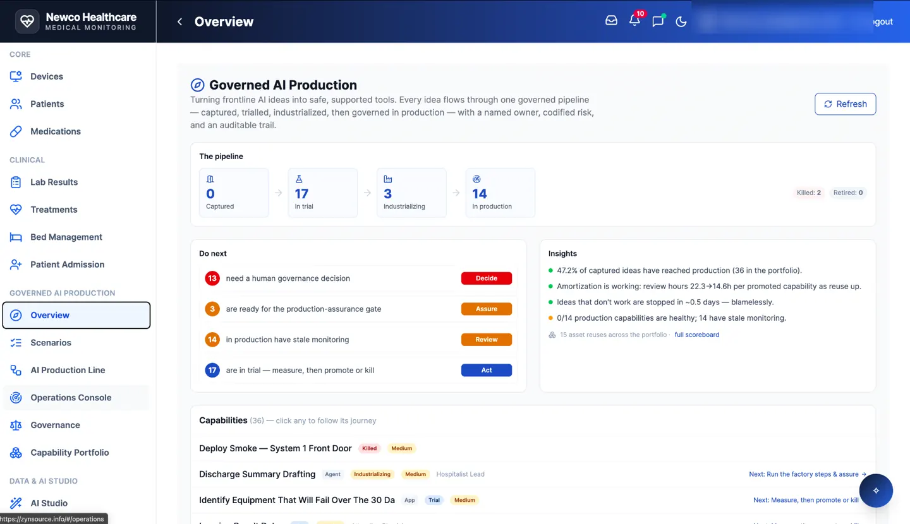
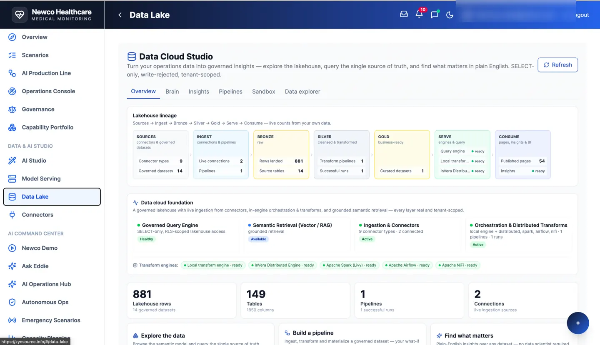

Accountability throughout the lifecycle
Inventory and lineage
Know what data and models enter the system and where outputs go.
Quality and testing
Test behavior, reliability and expected outcomes with explicit acceptance criteria.
Access and security
Use permissions and controls appropriate to the deployment.
Human oversight
Keep responsible people involved in decisions and exceptions.
Audit evidence
Capture changes, approvals, tests and operating evidence.
Standards alignment
Map controls to relevant standards and validate compliance requirements.

Governed delivery pipeline
A real interface showing workflow stages and oversight.

Traceable data architecture
Provenance and structured data governance.